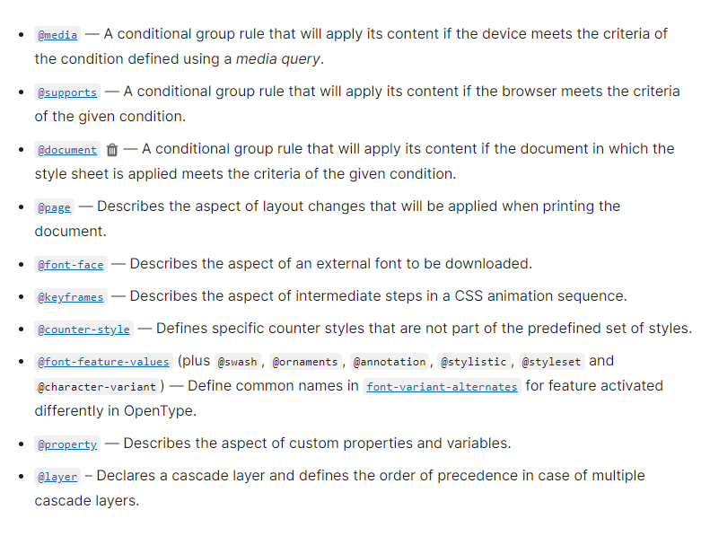
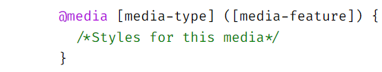

CSS at (@) Rule
- The at (@) rule is a statement, that provides CSS with Instructions
- Instructions to perform or how to behave.
@[KEYWORD] (rule)
- There are many rules like @import - to import a file, @font-face - to define local/self-hosted fonts, @keyframes - for animation

@media Rule
- To define breakpoints, we are particularly interested in the @media rule in CSS
- @media allows us to define CSS to different media (i.e Screens, printers, etc)
- Syntax :

- When designing for larger screens, we can define breakpoints as "media-features" for a particular screen stypes.
A
A